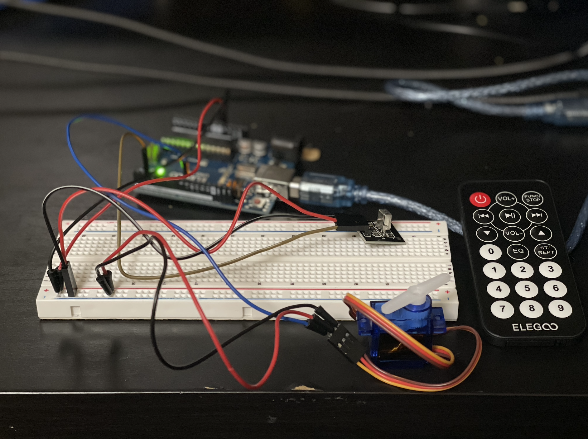
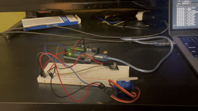

Here is all the documentation for assignment 4!
Circuit schematic
Here is all the documentation for assignment 4!
Circuit schematic

Circuit image
Code Snippet
// control a servo with an IR remote
#include < IRremote.hpp > //include IR remote library
#include < Servo.h > // include servo libary
#define IR_RECEIVE_PIN 2 // set pin for IR receiver
int position = 0; // set initial position for servo
uint32_t last_decodedRawData = 0; // store last received remote data as 32-bit integer
Servo myservo; // create Servo object to control a servo
void translateIR() // takes action based on IR code received
{
// Check if it is a repeat IR code
if (IrReceiver.decodedIRData.flags)
{
//set the current decodedRawData to the last decodedRawData
IrReceiver.decodedIRData.decodedRawData = last_decodedRawData;
}
//map the IR code to the remote keys fast forward and fast back
switch (IrReceiver.decodedIRData.decodedRawData)
{
case 0xBB44FF00: // if fast back pressed
Serial.println("FAST BACK"); // print to Serial
if (position > 0) { // if position is greater than 0 degrees
if (position - 10 < 0) { // if (position - change) passes threshold (less than 0 degrees)
myservo.write(0); // rotate servo shaft to 0
position = 0; // set position variable to 0
} else { // else if (position - change) is within threshold (greater than 0 degrees)
myservo.write(position - 10); // rotate servo shaft to position - 10
position -= 10; // set position variable to position - 10
}
}
break; // break out of switch
case 0xBC43FF00: // if fast forward pressed
Serial.println("FAST FORWARD"); // print to Serial
if (position < 180) { // if position is less than 180 degrees
if (position + 10 > 180) { // if (position + change) passes threshold (greater than 180 degrees)
myservo.write(180); // rotate servo shaft to 180
position = 180; // set position variable to 180
} else { // else if (position + change) is within threshold (less than 180 degrees)
myservo.write(position + 10); // rotate servo shaft to position + 10
position += 10; // set position variable to position + 10
}
}
break; // break out of switch
default: // take default action when any other button is pressed
Serial.println(" other button "); // print to Serial
}// End Case
//store the last decodedRawData
last_decodedRawData = IrReceiver.decodedIRData.decodedRawData;
delay(50); // Do not get immediate repeat
}
void setup()
{
Serial.begin(9600); // // Establish serial communication
IrReceiver.begin(IR_RECEIVE_PIN, ENABLE_LED_FEEDBACK); // Start the receiver
myservo.attach(9); // attaches the servo on pin 9 to the Servo object
}
void loop() {
if (IrReceiver.decode()) { //
translateIR(); // call function translateIR() which checks for IR input and takes action on servo
IrReceiver.resume(); // Enable receiving of the next value
}
}

Circuit demo

Question 1: Say you are using a servo motor you attach to pin 9. Draw a graph with the x-axis as time and the y-axis as voltage at pin 9 with respect to ground.
Question 2:Your input device is slightly broken, leading it to give us an erroneous reading 1% of the time. How can we address this? Answer in (pseudo)code.
For data outliers (erroneour readings) implement the following pseudocode:
int previousSensorValue;
void loop() {
if previousSensorValue not defined {
previousSensorValue = analogRead()
}
if (analogRead() > 2.5* previousSensorValue) {
sensorvalue = previousSensorValue
}
}
Question 3: Your input device is slightly noisy, leading the measurement to randomly deviate from the true measurement up or down by 10%. How can we address this? Answer in (pseudo)code.
for noisy data, use the average the previous 10 readings
prevAverage;
total = 0;
cur = 0;
void loop() {
if prevAverage not defined {
prevAverage = analogRead()
}
if cur < 10 {
total += analogRead()
cur ++
}
if cur = 10 {
prevAverage = total/10
cur = 0
}
doSomething(prevAverage)
}